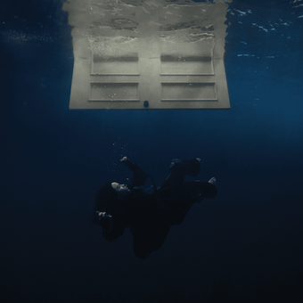

Willify
Willify

[Intro]
Oh, mm-mm
[Chorus]
I could eat that girl for lunch
Yeah, she dances on my tongue
Tastes like she might be the one
And I could never get enough
I could buy her so much stuff
It's a craving, not a crush, huh
"Call me when you're there"
Said, "I bought you somethin' rare
And I left it under 'Claire'"
So now, she's comin' up the stairs
So I'm pullin' up a chair
And I'm puttin' up my hair
[Verse 1]
Baby, I think you were made for me
Somebody write down the recipe
Been tryin' hard not to overeat
You're just so sweet
I'll run a shower for you like you want
Clothes on the counter for you, try 'em on
If I'm allowed, I'll help you take 'em off
Huh
[Chorus]
I could eat that girl for lunch
Yeah, she dances on my tongue
Tastes like she might be the one
And I could never get enough
I could buy her so much stuff
It's a craving, not a crush, huh
[Post-Chorus]
Oh, I just wanna get her off, oh
Oh
Oh, oh
Oh
[Verse 2]
She's takin' pictures in the mirrorv
Oh my God, her skin's so clear
Tell her, "Bring that over here"
You need a seat? I'll volunteer
Now she's smilin' ear to ear
She's the headlights, I'm the deer
[Bridge]
I've said it all before, but I'll say it again
I'm interested in more than just bein' your friend
I don't wanna break it, just want it to bend
Do you know how to bend?
[Chorus]
I could eat that girl for lunch
She dances on my tongue
I know it's just a hunch
But she might be the one
[Outro]
I could
Eat that girl for lunch
Yeah, she
Tastes like she might be the one
I could
I could
Eat that girl for lunch
Yeah, she
Yeah, she
Tastes like she might be the one